Kani propose actuellement 3 grands jeux et 4 mini-jeux
Indications:
(Choix1/Choix2)
[optionel]
{obligatoire}
▬▬▬▬▬▬▬▬▬▬▬▬▬▬▬▬▬▬▬▬▬▬▬▬
Pour débuter, nous allons créer une partie: k-lg create (classic/fun) classic = compo: normale, statistiques: on, gain: on; join: tous fun = compo: normale, statistiques: off, gain: on, join: tous
ou
k-lg create loto {coût d'entrée} loto = compo: loto, statistiques: on, gain: égal à la somme jouée; join: tous
ou
k-lg create private ({role}/ND) ({level}/ND) privé = compo: normale, statistiques: on, gain: on; join: seulement role/level sélectionné
Nous allons maintenant étudier le panel de partie:
Entrer dans la partie ou sortir de la partie : Utilisez la réaction 👍, la première fois pour entrer la deuxième pour sortir, ou alors la commande: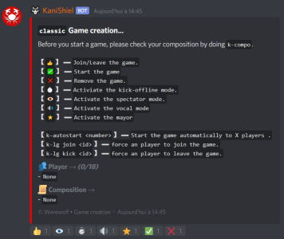 k-loupgarou join [mention] pour rentrer Et la commande: k-loupgarou kick [mention] pour sortir. Démarrer la partie : Utilisez la réaction ✅ ou alors la commande: k-loupgarou start Détruire la partie : Utilisez la réaction ❌ ou alors la commande: k-loupgarou remove
Activer le kick-offline: Dès que quelqu'un passera hors ligne, il sera automatiquement éjecté de la partie: Utilisez la réaction ⏱ Activer le mode spectateur: Pendant la partie, des gens extérieurs à la partie pourront voir le salon village: Utilisez la réaction 👀 Activer le mode vocal: Des salons vocaux se créeront et pendant la nuit tout le monde sera mute: Utilisez la réaction 🔊 Activer le maire: Utilisez la réaction ⭐ Démarrage automatique:Pour démarrer automatiquement la partie dès que le nombre de participant souhaité est atteint, utilisez la commande: k-autostart {nombre de joueur}
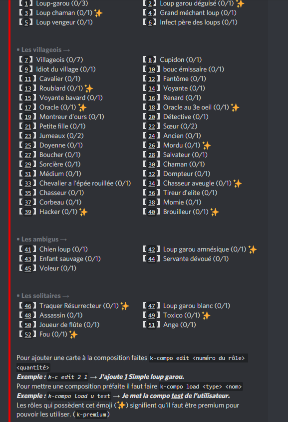Composition:Vous pouvez bien sûr ajouter une composition. Ce n'est pas obligatoire car si vous n'en mettez pas ou si elle est erronée Kani en mettra une pré-définie. Pour ouvrir le panneau de composition faites: k-compo Pour la modifier, faites: k-c edit [id] {nombre} L'id est le nombre devant le rôle choisit et le nombre est le nombre de rôle que vous souhaitez (par défaut, 1).
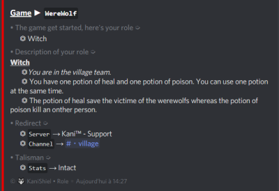Maintenant partons en partie, vous recevrez votre rôle en message privé : La structure du message est la suivante : ⏣ Votre rôle ⏣ La description de celui-ci ⏣ Le serveur où se déroule la partie et le lien vers le salon village
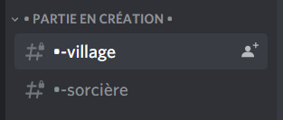KaniShiel a crée les salons de la partie tout en bas du serveur. Mon rôle dans cette partie étant sorcière je n'ai accès qu'au salon de mon rôle. La partie commence directement par une nuit: ⏣ Le salon village est bloqué, vous ne pouvez pas y écrire ⏣ Votre salon est accessible et des votes s'y déroulent pour choisir votre action.
Alors étudions les exemples ci-dessous:
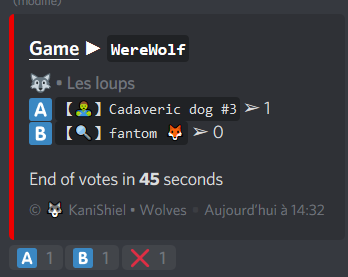Premier vote (Les loups-garous): Vous avez les pseudonymes qui sont reliés à une lettre et en réagissant avec la lettre correspondante vous mettez donc un vote sur celui-ci. En dessous, vous avez le temps qu'il vous reste (Truc à savoir : quand tout les loups ont voté, le timer passe immédiatement à 9 secondes restantes).
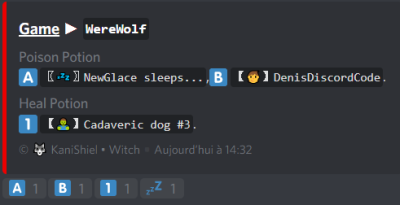Deuxième vote (La sorcière): Deux listes de pseudonymes apparaitront : Ceux qui sont morts durant la nuit et ceux qui sont vivant, comme pour le premier, il y a association d'un pseudo à une lettre mais pour différencier les vivants et les morts, ces derniers sont associés à un chiffre. Vous n'avez qu'une action, ressusciter ou tuer quelqu'un.
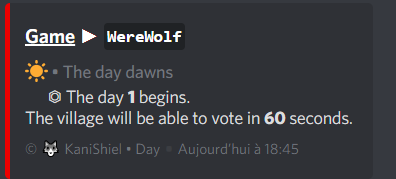Le jour 1 commence.
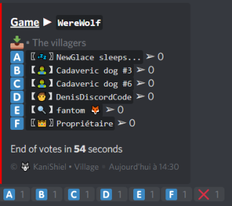Selon les réglages de temps de vote, le vote arrivera.
Fin de partie:
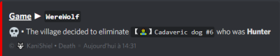Le nom de la personne décédée ainsi que son rôle sont dévoilés.
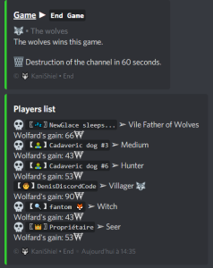Dès que la partie est finie, le clan qui a gagné est affiché (cela s'affiche aussi en cas d'égalité) et un récapitulatif des rôles, des morts, des infections et autres apparaissent !
▬▬▬▬▬▬▬▬▬▬▬▬▬▬▬▬▬▬▬▬▬▬▬▬
Pour débuter, nous allons créer une partie: k-monopoly create
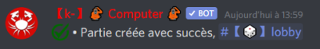Le bot vous confirme que la partie a été créée avec le salon où il faut aller pour la rejoindre:
Description du lancement:
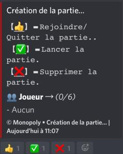Le lancement d'une partie de Monopoly ne possède pas d'options contrairement à celui d'une partie de Loup-Garou. Pour rejoindre la partie ou la quittez: Utilisez la réaction: 👍 Démarrer la partie: Utilisez la réaction: ✅ ou faites la commande: k-monopoly start Pour détruire la partie: Utilisez la réaction: ❌ ou faites la commmande:k-monopoly remove
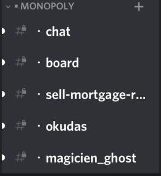Une fois la partie lancée, le bot crée les salons nécessaires.
Description des salons:
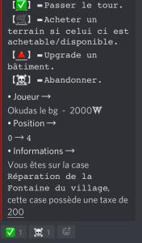⏣ Chat Le salon Chat est le salon principal où la majeur partie du jeu va se dérouler. A chaque tour, le bot va poster ce message. Pour chaque tour, les emojis servent aux mêmes choses: Le ✅ sert à passer son tour ou à payer les autres joueurs ou les taxes. Le 🛒 sert à acheter le terrain sur lequel l'on se trouve si cela est possible. Le 🔺 permet d'améliorer au niveau supérieur sa propriété uniquement si l'on se trouve dessus. La ☠ permet d'abondonner la partie.
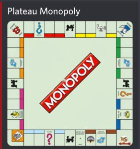 ⏣ Board Le salon Board est comme son nom l'indique le plateau du jeu. Il s'actualise à chaque tour.
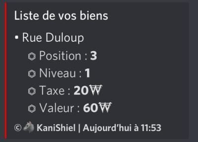⏣ Salon Joueur Chaque joueur a son salon qui lui est dédié. Dans ce salon est inscrit la liste de vos biens.
⏣ Self-mortgage-refund Ce salon permet la vente, la mise en hypothèque ainsi que le remboursment d'une hypothèque. - Vente: imaginons la vente de la rue des du Loup si-dessus La commande pour la vente est la suivante: -sell @user bien prix Le @user doit être remplacé par la personne à qui l'on veut vendre. Le bien doit être remplacé par la position du bien (3 pour la rue du Loup). Le prix doit être remplacé par la valeur du bien (60 pour la rue du Loup). La commande finale donne: -sell @Okudas#0000 3 60
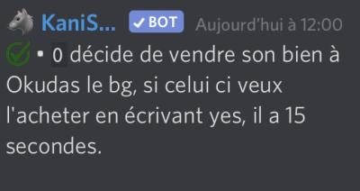Le bot répond avec le message ci-contre.Une fois la vente validée par l'autre joueur, le bot confirme la vente.
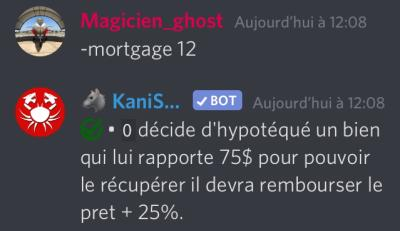 - Hypothèque: Permet d'obtenir un prêt de la moitié de la valeur du bien. Il faut rembourser ce bien. Mais vous ne gagnerez pas d'argent si quelqu'un tombe dessus. Pour rembourser un prêt, il suffit d'utiliser la commande: -refund bienIl suffit de remplacer bien par la position (3 pour la rue du Loup).
Fin de partie:
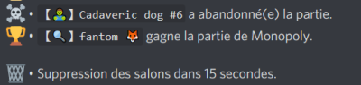La partie s'arrête lorsque tous les joueurs ont abandonné ou lorsque les joueurs ne réagissent plus au bout d'un certain temps.
▬▬▬▬▬▬▬▬▬▬▬▬▬▬▬▬▬▬▬▬▬▬▬▬
Pour débuter, nous allons créer une partie:k-millebornes create
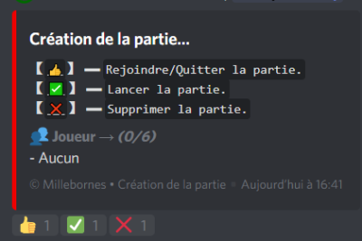Le bot envoie le panel de partie ci-contre dans le salon configuré pour. Le panel de partie est exactement le même que celui du Monopoly.
Dès que la partie est lancée, Kani crée les salons pour le jeu
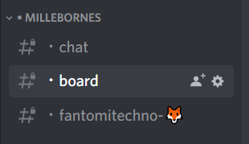Description des salons: ⏣Chat C'est l'endroit où vous pouvez discuter avec vos adversaires et là où apparait un récapitulatif des actions passées. ⏣Board Comme pour le Monopoly, il s'agit du plateau du jeu.
⏣Salons personnels Les salons où apparaissent les cartes de chacun et là où chacun choisit les actions qu'il exécute.
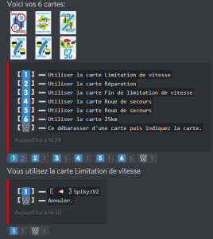Les cartes kilométrées, "Contre" et les Bonus Spéciaux : Pour les utiliser, utilisez simplement la réaction liée à l'action souhaitée. Les cartes "Malus": Réagissez avec la réaction correspondant à la carte puis un panel apparaîtra pour que vous choisissiez sur qui l'utiliser. Une confirmation apparaîtra par la suite.
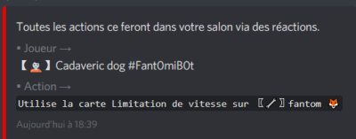Dans le salon Chat apparait le message ci-contre.
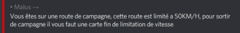Le message ci-contre apparaît dans le salon du joueur concerné.
Se débarraser d'une carte:
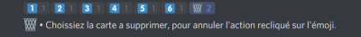Si une carte ne peut être utilisée, vous pouvez vous en débarrasser.
Vous devez choisir laquelle jeter.
Fin de partie:
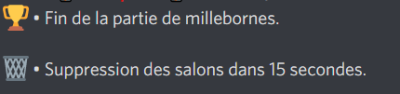La partie se finit dès qu'il ne reste plus qu'un seul joueur à ne pas être arrivé. Ce message apparait alors dans Chat.
▬▬▬▬▬▬▬▬▬▬▬▬▬▬▬▬▬▬▬▬▬▬▬▬